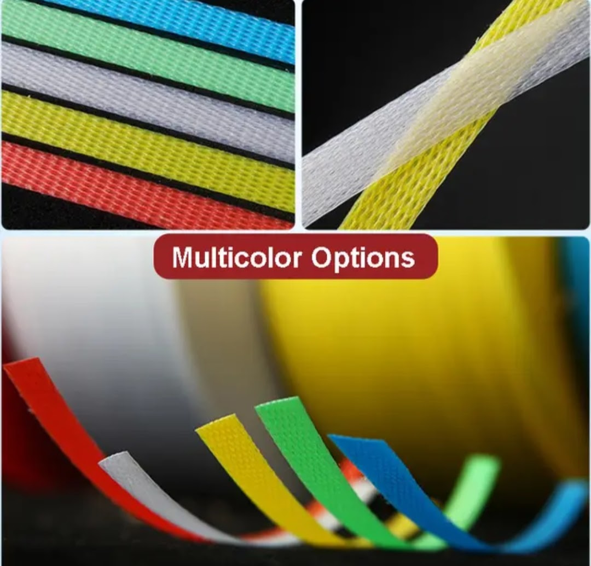
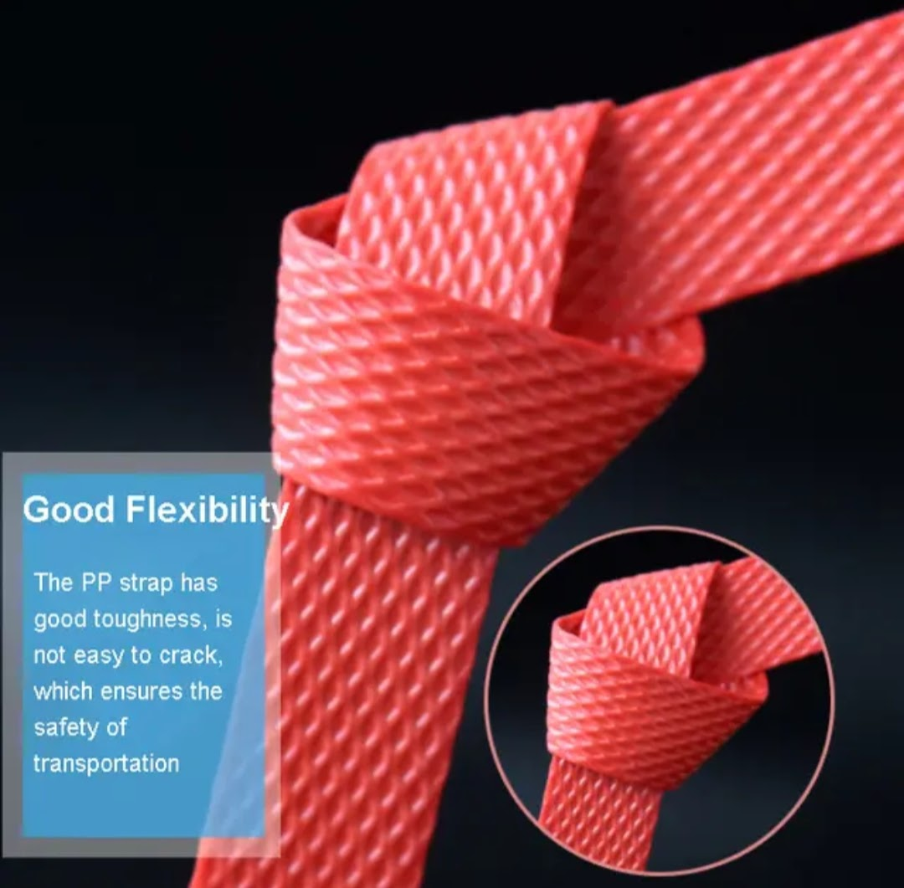
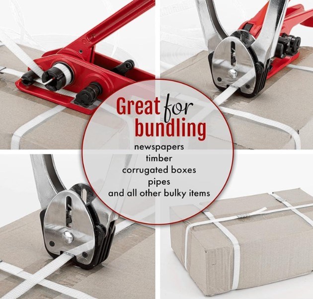
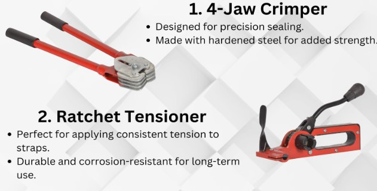
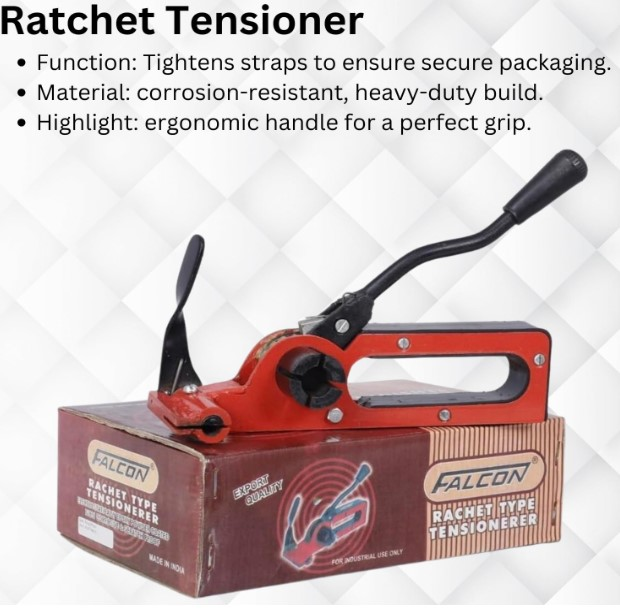
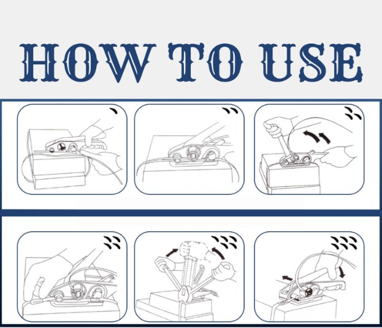
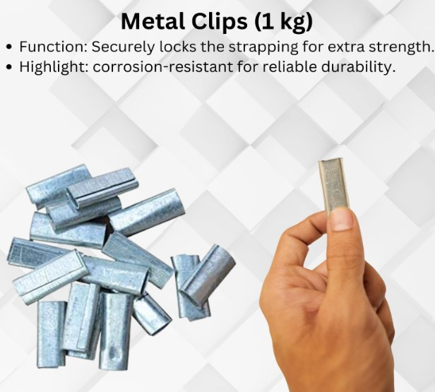

Complete manual strapping solutions designed for efficient packaging, bundling, and securing of goods during transport and storage.








Manual Strapping Kits provide a reliable and cost-effective solution for securing packages, cartons, and bundled goods without the need for powered machinery.
These kits typically include tensioners, sealers, cutters, and compatible strapping, making them suitable for light to medium-duty packaging applications.
For Indian operating conditions, PP strapping is commonly sufficient for cartons and light bundles, while PET strapping is recommended for heavier loads. Proper tensioning technique helps avoid strap breakage during transport.